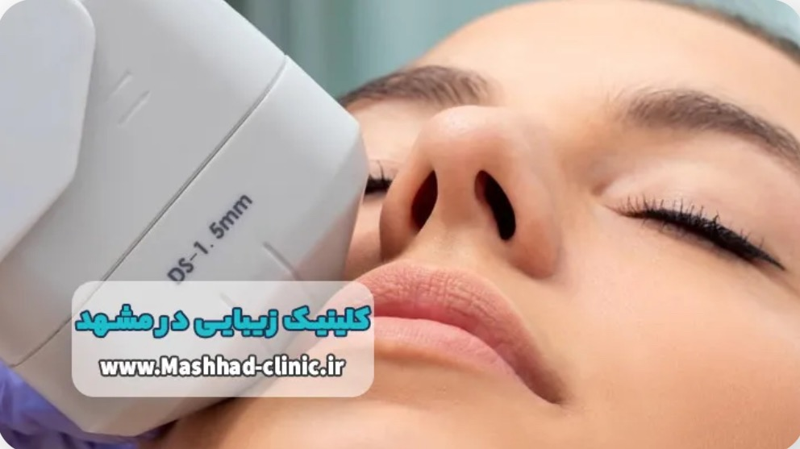
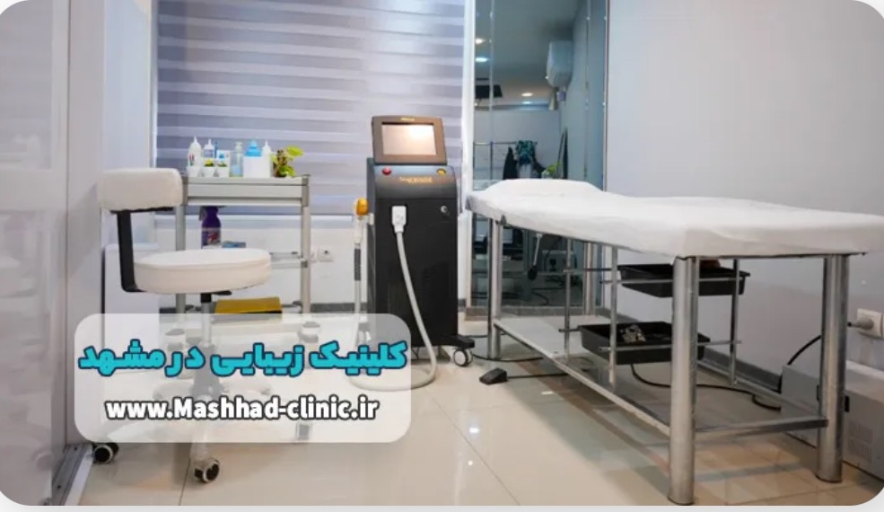

این روزها در هر ناحیه از شهر مشهد می توان شاهد فعالیت یک کلینیک زیبایی مدرن بود. اما در این میان چطور می توان به خدمات کلینیک ها اعتماد کرد؟ چطور بفهمیم بهترین کلینیک زیبایی در مشهد کدام است؟ اگر برای برخورداری از خدمات زیبایی پوست و مو در مشهد به دنبال لیست بهترین مراکز هستید در این صفحه تا انتها با ما همراه باشید.
بهترین راه حل ها برای تثبیت زیبایی و جوانی با متخصصین زیبایی به نام در بهترین کلینیک زیبایی مشهد را به شما مردمان عزیز و خون گرم مشهد ارائه می دهیم. اگر به دنبال زیبایی در کنار طبیعی بودن چهره خود هستید می توانید از خدمات بی نظیر کلینیک های زیبایی معرفی شده در این صفحه استفاده کنید. فضای زیبا و پر از آرامش این کلینیک ها تجربه ای مثبت توام با آرامش را برای شما رقم خواهد زد. در انتخاب بهترین کلینیک های زیبایی مشهد عوامل زیر دخیل بوده اند:

بهترین کلینیک زیبایی مشهد به دلیل تخصص و دانش بالای متخصصین زیبایی خود، بهترین راه حل ها برای زیبایی و جوانی طبیعی در کنار آرامش و رضایت حداکثری برای مشتریان خود را ارائه می دهد. این کلینیک با فضای زیبا و آرامش بخش، به شما امکان می دهد تا از خدمات بی نظیر آن استفاده کنید و تجربه ای جذاب را برای خود رقم بزنید. از آن جایی که این کلینیک برتری های فراوانی از جمله تخصص و تجربه متخصصین، استفاده از تکنولوژی های پیشرفته و ارائه خدمات با کیفیت بالا را دارد، مورد توجه مشتریان زیبا پسند واقع شده است. تیم پزشکان و متخصصین حاضر در این کلینیک بسیار حرفه ای بوده و با تجربه ای که دارند تنها به دنبال کسب درآمد نیستند و سلامت مراجعین نیز برای آنان دارای اهمیت است.
کلینیک زیبایی مشهد با ارائه خدمات متنوعی از جمله لیزر موهای زائد، جراحی پلاستیک، درمان چین و چروک، درمان لکه های پوستی و... به مراجعین خود کمک می کند تا به زیبایی و جوانی دلخواه دست پیدا کنند. این کلینیک با استفاده از تجهیزات پیشرفته و روش های درمانی مدرن به مراجعین خود خدمات با کیفیتی ارائه می دهد.
مشاوره فردی در کلینیک زیبایی مشهد به این معناست که از طریق گفتگو و بررسی نیازها و هدف های شما، بهترین راهکارهای درمانی و زیبایی را برای شما پیشنهاد می دهیم. این مشاوره شامل ارزیابی تصاویر بدون عیب و نقص، اندازه گیری های بدنی و صورت، گفتگو در مورد تاریخچه پزشکی و همچنین توضیح در مورد روش های درمانی و عوارض آن ها می باشد. در بهترین کلینیک زیبایی در مشهد، ما تا زمانی که سیر درمان زیبایی شما به پایان نرسد، در کنار شما خواهیم ماند. از آغاز تا انتها، تمامی مراحل درمانی و پس از درمان نیز، مورد حمایت و پشتیبانی ما قرار خواهد گرفت. این امر به شما اعتماد بیشتری به درمان و مشاوره های ما می دهد و اطمینان ما این است که شما در پیشبرد اهداف زیبایی خود موفق خواهید بود.
امروزه اغلب افراد جامعه به رعایت بهداشت و اهمیت آن پی برده اند، در بهترین کلینیک زیبایی در مشهد نیز برای این منظور تدابیر ویژه ای اندیشیده شده است و از تجهیزات بهداشتی معتبر استفاده می شود. رعایت اصول بهداشتی از اهمیت بسیاری برخوردار است، از آن جایی که بهبود و حفظ سلامتی افراد جامعه مستلزم رعایت اصول بهداشتی خواهد بود. بهداشت فردی و عمومی نقش بسیار مهمی در جلوگیری از انتشار بیماری ها و حفظ سلامتی دارد.
